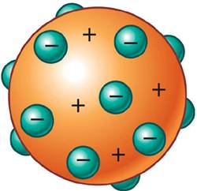
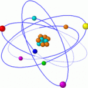
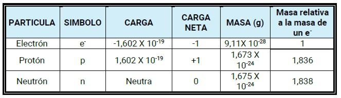
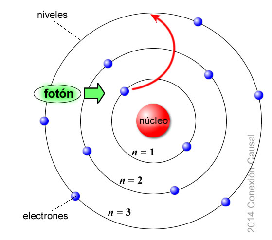

Evolución
|
En 1904, Joseph Thomson propuso un modelo en el cual la parte positiva del átomo se hallaba distribuida uniformemente por todo el volumen de este, mientras los electrones se hallaban inmersos en esta matriz de protones, como las pasas en un budín. A principios del siglo XX, Ernest Rutherford realizó un experimento, observó que cuando un haz de partículas alfa, emitidas por el polonio, uno de los elementos radiactivos, golpeaba contra una lámina de oro, algunas de las partículas incidentes rebotaban, hasta el punto de invertir completamente la dirección de su trayectoria. Con el fin de dar una explicación a este hecho, Rutherford propuso, en 1911, la existencia del núcleo atómico, como una zona central densa, en la cual se concentraba cerca del 99,95% de la masa atómica. El núcleo debía ser positivo, puesto que las partículas alfa, también positivas, eran rechazadas al chocar contra los núcleos de los átomos del metal. |
 |
También estableció que los electrones debían mantenerse en constante movimiento en torno al núcleo, aunque a una cierta distancia, con lo cual gran parte del volumen del átomo sería espacio vacío. Al igual que Thomson, Rutherford consideró que la carga negativa de los electrones debía contrarrestar la carga positiva del núcleo, para dar lugar a un átomo neutro.

Desde 1920, Rutherford había supuesto la existencia de una tercera partícula subatómica, que debía ser neutra, pues muchos elementos poseían una masa superior a lo esperado si sus núcleos solo estuvieran conformados por protones. Sin embargo, en 1932 James Chadwick, observó que, al bombardear placas de berilio con partículas alfa, estas placas emitían unas partículas, que a su vez se hacían chocar contra un bloque de parafina, ocasionando un desprendimiento de protones en este. Este hecho hacía pensar que su masa debía ser similar a la de los protones. Además, estas partículas no se desviaban por la presencia de campos eléctricos, luego debían ser neutras, por lo que se las llamó neutrones. Actualmente se calcula que la masa de un neutrón es 1,675X10-24 gramos.
|
Estos descubrimientos llevaron a describir al átomo como la unidad estructural de la materia, formada por tres subpartículas básicas: protones, neutrones y electrones. |

Niels Bohr propuso, en 1913, que los electrones deberían moverse alrededor del núcleo a gran velocidad y siguiendo órbitas bien definidas.

Surgieron nuevas condiciones sobre el comportamiento del electrón:
- Los electrones giran alrededor del núcleo en un número limitado de órbitas (niveles de energía) estables. Cada uno de esos niveles posee un valor determinado de energía. Es decir, los electrones pueden situarse en uno u otro nivel, pero no entre dos niveles.
- Cuando los electrones se encuentran en sus órbitas (estado fundamental) no emiten energía. Solo pueden ganar o perder energía cuando pasan de una órbita a otra.
- El electrón pasara de una órbita superior (estado excitado) cuando se le suministre energía.
- Cuando el electrón vuelva a su estado fundamental perderá energía.
Desde el punto de vista de la mecánica cuántica, la introducción de los números cuánticos es una de las soluciones para la ecuación que se emplea para describir las regiones del átomo en las que es altamente probable encontrar un electrón. Estas regiones se denominan orbitales.
Cuando una persona se fractura o lesiona algún hueso, generalmente, los médicos solicitan una radiografía. Por media de esta imagen, es posible identificar claramente la gravedad de la lesión y así mismo proporcionar el tratamiento adecuado al paciente.
La tecnología radiológica utiliza rayos de alta energía que pueden atravesar determinados tejidos del cuerpo y crear imágenes vitales para el diagnóstico y el tratamiento. La máquina de rayos X comprende un tubo de rayos X, que contiene un par de electrodos o conductores, denominados cátodo y ánodo. Antes de continuar, te sugiero repasar los siguientes conceptos:
(cliqueá sobre el enlace para visitar el contenido): Así se hacen las radiografías
Luego contesta las siguientes preguntas:
- ¿Qué fenómenos químicos y físicos se presentan al tomar una radiografía?
- ¿Cuál es la relación entre éste tipo de técnica y los fundamentos de la estructura atómica?
Obra publicada con Licencia Creative Commons Reconocimiento Compartir igual 4.0